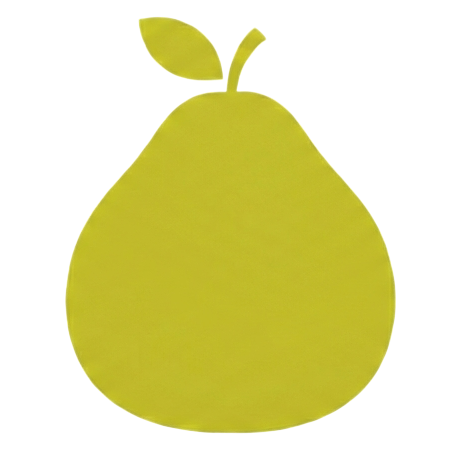

Yo Programming Language
A general-purpose, ahead-of-time compiled language with algebraic effects
Yo
English | 简体中文
Work in Progress :) Not Ready!
A multi-paradigm, general-purpose, compiled programming language. Yo aims to be Simple and Fast (around 0% - 15% slower than C).
The name
Yocomes from the Chinese word柚(yòu), meaningpomelo, a large citrus fruit similar to grapefruit. It's my daughter's nickname.
📖 My Story with Programming Languages — the journey from Java at 16 to building Yo.
- Features
- Installation
- Quick Start
- Prelude
- Standard Library
- Code examples
- Contributing
- Editor Support
- AI Agent Skills
- Star History
- License
Features
For the design of the language, please refer to DESIGN.md.
Below is a non-exhaustive list of features that Yo supports:
- First-class types.
- Compile-time evaluation.
- Homoiconicity and metaprogramming (Yo syntax is inspired by the Lisp S expression. Simple syntax rule, Human & AI friendly).
- Closure.
- Algebraic Effects and Handlers (One-shot delimited continuation. Tail-Resumptive. Implicit parameters via
using/given, effect handlers withreturn/escape, by Evidence Passing). - Async/await (Builtin
IOeffect. Stackless coroutine & Cooperative multi-tasking. Lazy Futures, multi-await, single-threaded concurrency via state machine transformation). objecttype with Non-atomic Reference Counting and Thread-Local Cycle Collection.- Compile-time Reference Counting with Ownership and Lifetime Analysis.
- Thread-per-core parallelism model (see PARALLELISM.md).
- Declarative build system inspired by Zig and Nix (
yo build,yo init, WASM targets). - C interop.
- etc.
Installation
The Yo language is currently distributed as an npm package:
$ npm install -g @shd101wyy/yo # Install yo compiler globally
$ yarn global add @shd101wyy/yo # Or using yarn
$ pnpm add -g @shd101wyy/yo # Or using pnpm
$ bun install --global @shd101wyy/yo # Or using bun
It exposes the yo command in your terminal.
There is also an alias yo-cli for yo command in case of naming conflicts.
Run yo --help or yo-cli --help to see available commands.
Yo transpiles to C, so a C compiler is required to produce machine code. Follow the instructions for your platform below.
Linux
Install Clang (recommended), liburing (for async I/O), and pkg-config (for system library discovery):
# Ubuntu/Debian
$ sudo apt-get update
$ sudo apt-get install clang liburing-dev pkg-config
# Fedora/RHEL
$ sudo dnf install clang liburing-devel pkgconf-pkg-config
# Arch Linux
$ sudo pacman -S clang liburing pkgconf
You can also use gcc or zig instead of clang by passing --cc gcc or --cc zig.
macOS
Clang is included with Xcode Command Line Tools:
$ xcode-select --install
# Also install pkgconf for system library discovery
$ brew install pkgconf
Or install LLVM via Homebrew:
$ brew install llvm pkgconf
Windows
Clang on Windows requires a linker and Windows SDK headers. Install Visual Studio (Community edition is free) or the Build Tools for Visual Studio with the "Desktop development with C++" workload:
- Download from https://visualstudio.microsoft.com/downloads/
- In the installer, select "Desktop development with C++" (this includes MSVC, Windows SDK, and the linker)
- Then install LLVM/Clang:
# Using Chocolatey
$ choco install llvm
# Using Scoop
$ scoop install llvm
# Or download from https://releases.llvm.org/
Alternatively, you can use zig as the C compiler (no Visual Studio needed):
$ choco install zig
$ yo compile main.yo --cc zig --release -o main
For system library discovery, install vcpkg:
$ git clone https://github.com/microsoft/vcpkg.git
$ .\vcpkg\bootstrap-vcpkg.bat
# Then set the VCPKG_ROOT environment variable to the vcpkg directory
# Or using Scoop
$ scoop install vcpkg
For more information, see the vcpkg documentation.
WebAssembly (WASM)
Yo can compile to WebAssembly using Emscripten:
# Install Emscripten (https://emscripten.org/docs/getting_started/downloads.html)
$ git clone https://github.com/emscripten-core/emsdk.git
$ cd emsdk
$ ./emsdk install latest
$ ./emsdk activate latest
$ source ./emsdk_env.sh
# Compile a Yo program to WASM
$ yo compile main.yo --cc emcc --release -o app
# This produces: app.html + app.js + app.wasm
# Run with Node.js:
$ node app.js
# Or open app.html in a browser
When using --cc emcc, Yo automatically targets wasm32-emscripten and uses the libc allocator. You can also use --target wasm-emscripten (which auto-selects emcc). Emscripten produces an .html file (browser shell), a .js file (runtime glue), and a .wasm file (compiled binary).
Quick Start
$ yo init my-project # Scaffold a new project
$ cd my-project
$ yo build run # Build and run
Hello, world!
yo init generates a project with a build file, source, and tests:
my-project/
├── build.yo # Build configuration
├── src/
│ ├── main.yo # Entry point
│ └── lib.yo # Library module
└── tests/
└── main.test.yo # Unit tests
src/main.yo:
{ println } :: import "std/fmt";
main :: (fn() -> unit)({
println("Hello, world!");
});
export main;
Common build commands:
$ yo build # Build all artifacts
$ yo build run # Build and run the executable
$ yo build test # Run tests
$ yo build --list-steps # List available build steps
$ yo build doc # Generate HTML documentation
Prelude
Every Yo file automatically imports std/prelude.yo, which provides the core types, traits, and builtins available without any explicit import:
- Primitive types:
bool,i8–i64,u8–u64,f32,f64,isize,usize,str - C-compatible types:
int,uint,short,long,longlong,char, etc. - Core traits:
Eq,Ord,Add,Sub,Mul,Div,Iterator,IntoIterator,TryFrom,TryInto,Dispose,Send,Rc,Acyclic, etc. - Metaprogramming:
Type,Expr,ExprList,Var - Async:
IO,FutureState,JoinHandle - Utilities:
assert,unsafe,try,for,not,arc,Box,box - etc.
Standard Library
Still In Design
Yo ships with a comprehensive standard library covering strings, collections, file I/O, networking, encoding, regex, crypto, and more. For the full module reference, see the Standard Library Documentation.
You can generate documentation for your own project with yo doc:
$ yo doc ./src -o docs --title "My Project"
Or add a documentation step to your build.yo — see yo doc --help for details.
Code examples
Check the ./tests and ./std folders for more code examples.
Hello World
// main.yo
{ println } :: import "std/fmt";
main :: (fn() -> unit) {
println("Hello, world!");
};
export main;
// $ yo compile main.yo --release -o main
// $ ./main
Example Projects
| Project | Description |
|---|---|
| raylib_yo | Comprehensive raylib bindings — 35 struct types, 535 functions, 227 constants |
| tetris_yo | Online Demo | Classic Tetris game built with raylib_yo, demonstrating Yo's build system and C interop |
| http_server_demo_yo | Simple HTTP/1.1 server — async I/O, algebraic effects, TCP networking, request parsing & routing |
| markdown_it_yo | Direct port of the popular JavaScript markdown parser markdown-it to Yo, showcasing string processing and performance |
| markdown_yo | Online Demo | High-performance markdown-to-HTML converter — 5-7× faster than markdown-it (native), 2-6× faster (WASM at ≥1 MB). Try it in the browser |
Contributing
The Yo compiler is written in TypeScript and uses Bun as the runtime.
Yo is primarily developed on the Steam Deck LCD (Linux). The compiler currently transpiles Yo to C; to produce
machine code you must have a C compiler (for example gcc, clang, zig, cl, emcc, etc).
Please install nix and direnv before proceeding.
The dev environment is defined in shell.nix. You can also manually install the dependencies listed in the file.
Setup
$ cd Yo
$ direnv allow . # Run this command to activate the nix shell.
# You only need to run it once.
$ bun install # Install necessary dependencies.
Run the following command to watch for changes and build the project:
$ bun run dev
Run the following command to build the project:
$ bun run build
Test the local yo-cli:
$ bun run src/yo-cli.ts compile src/tests/examples/fixme.yo
# There is also a `yo-cli` script in the project root for testing:
$ ./yo-cli compile src/tests/examples/fixme.yo
Editor Support
-
A VS Code extension is available here that supports basic syntax highlighting. No LSP yet.
-
Vim / Neovim: a minimal syntax file and a usage README are available in
vscode-extension/syntaxes/. See vscode-extension/syntaxes/README.md for installation steps,ftdetectexamples andhome-managersnippets.
AI Agent Skills
This repository ships a set of agent skill files that teach AI agents how to write Yo programs. The skills are portable — you can copy the .github/skills/ directory into any Yo project and agents will be able to use them there too.
| Skill | Description |
|---|---|
yo-syntax |
Core language syntax: curly braces, cond/match, structs, enums, operators, modules |
yo-core-patterns |
Everyday patterns: types, generics, traits, error handling, collections, iterators |
yo-async-effects |
Async/await, algebraic effects, Exception, IO, spawning tasks |
yo-project-workflow |
yo CLI commands, build.yo project files, dependency management |
Using in your own project
Copy the skills directory into your Yo project:
cp -r .github/skills /path/to/your-yo-project/.github/
# or .agents, .claude, etc depending on your agent platform
Then in any AI agent session, invoke a skill by name (e.g. @yo-syntax) to give the agent contextual knowledge about the Yo language.